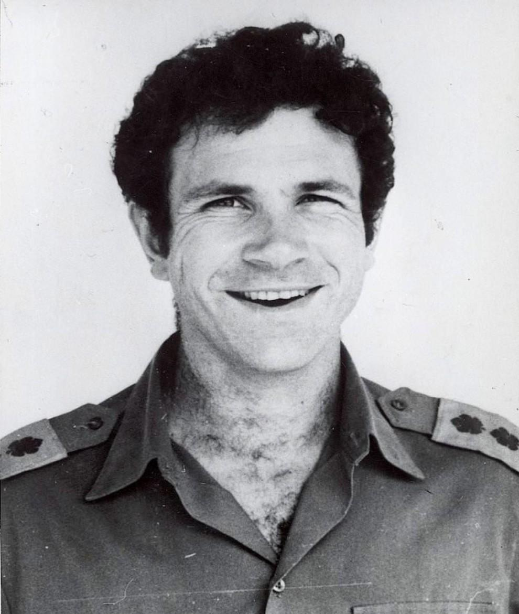
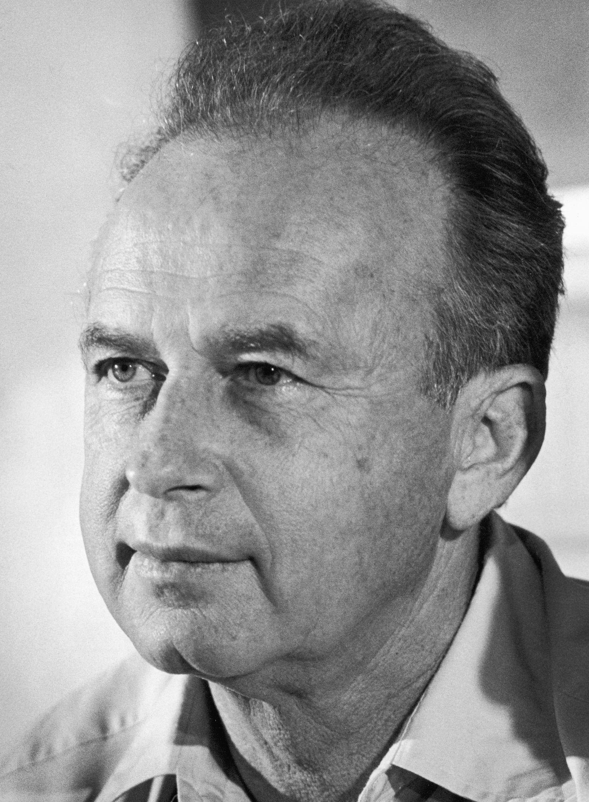
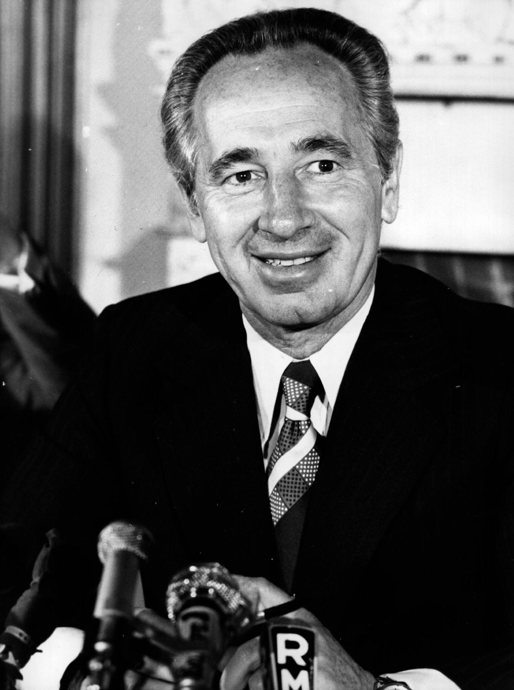
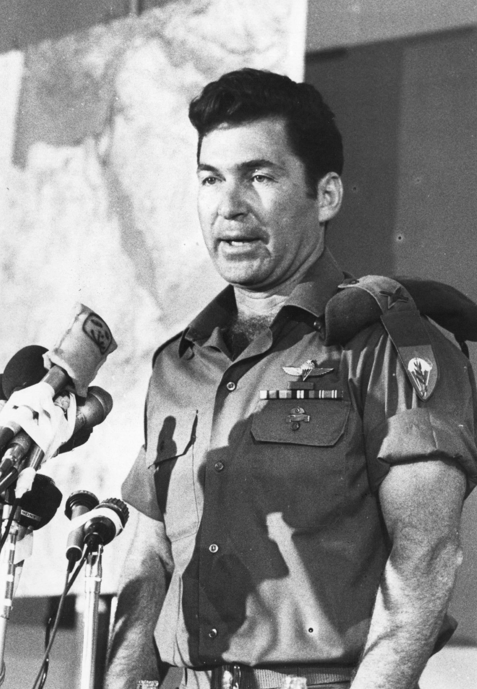

Yonatan "Yoni" Netanyahu was an Israeli military officer and commander of the elite Sayeret Matkal unit. He played a central role in leading the ground assault during Operation Entebbe. Netanyahu was killed during the rescue mission and became one of the operation's most remembered figures. The mission was later officially named Operation Yonatan in his honor.

Yitzhak Rabin served as Israel's prime minister during the hostage crisis. He faced the difficult responsibility of deciding whether to negotiate with the hijackers or authorize a dangerous rescue operation. Working with senior ministers and military commanders, Rabin's government ultimately approved the mission despite the considerable risks involved.

played an important role in supporting the development of a military rescue plan while the Israeli government considered its options. Peres worked closely with military leaders as they examined whether a long-distance operation in Uganda could be carried out successfully.

Brigadier General Dan Shomron was appointed to command the overall rescue operation. He coordinated the military planning and the different forces involved in the mission. His leadership was essential in organizing a complex operation that required precise timing, secrecy and cooperation between several military units.

"I have never been as proud of the IDF high command as this time."
— Shimon Peres, July 4, 1976
Learn more about Yoni Netanyahu's military service, leadership and experience before Operation Entebbe.
Read More on WikipediaBrigadier General Dan Shomron commanded the overall mission, while Yoni Netanyahu led the Sayeret Matkal assault force.
Yoni Netanyahu was killed during the rescue mission. The operation was later renamed Operation Yonatan to honor his memory.